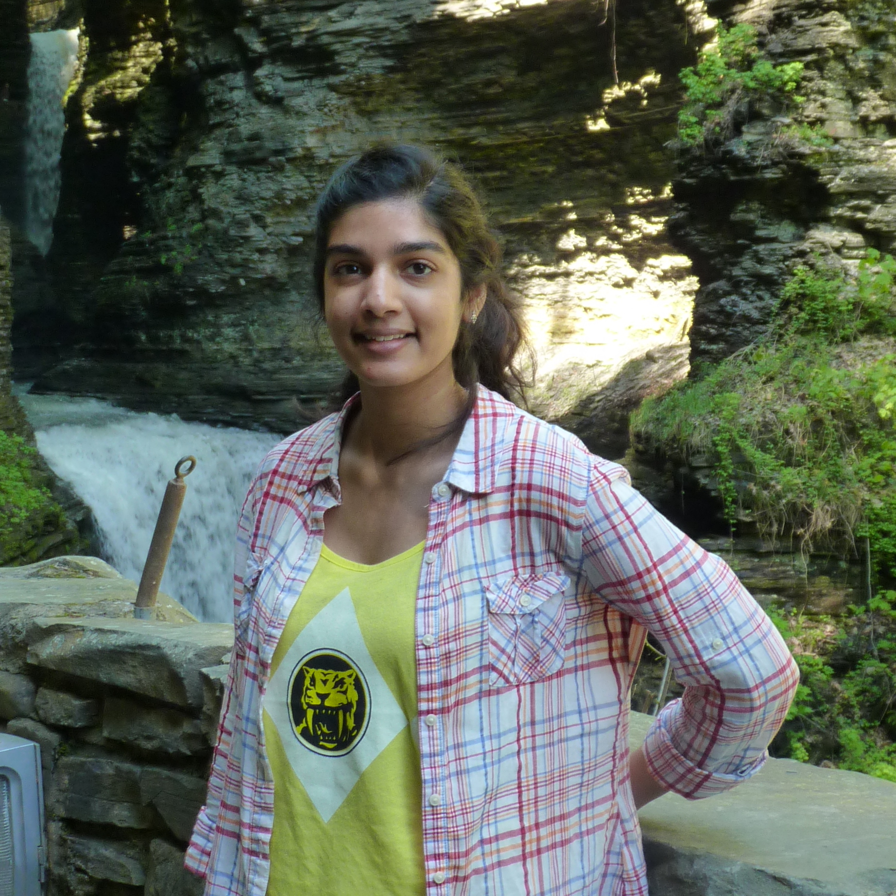

About Me

Sarika dreamt of having four jobs at once when she was in elementary school. She wanted to be a gladiator in the Colosseum, a veterinarian, a pediatrician and an artist in her spare time. By the time she started looking at colleges, she had realized that treating patients (humans or animals) was not for her. And fighting in the Colosseum was out of the question. She had found that her passion was to create art that would inspire and bring joy to people.
Animation was the perfect medium. It combined story-telling, science (physics and anatomy), and art. She attended Rochester Institute of Technology and graduated with a BFA in Film and Animation and a minor in Game Design. She has designed assets for a Sesame Studios music video and animated on an Amazon Christmas Special. She has also had the wonderful opportunity to work as a designer and production assistant for the award winning PBS Kids Show, Peg + Cat. Each experience has taught her the art of bringing a director's vision to life, new techniques, and of course, bringing joy to people through her artwork.